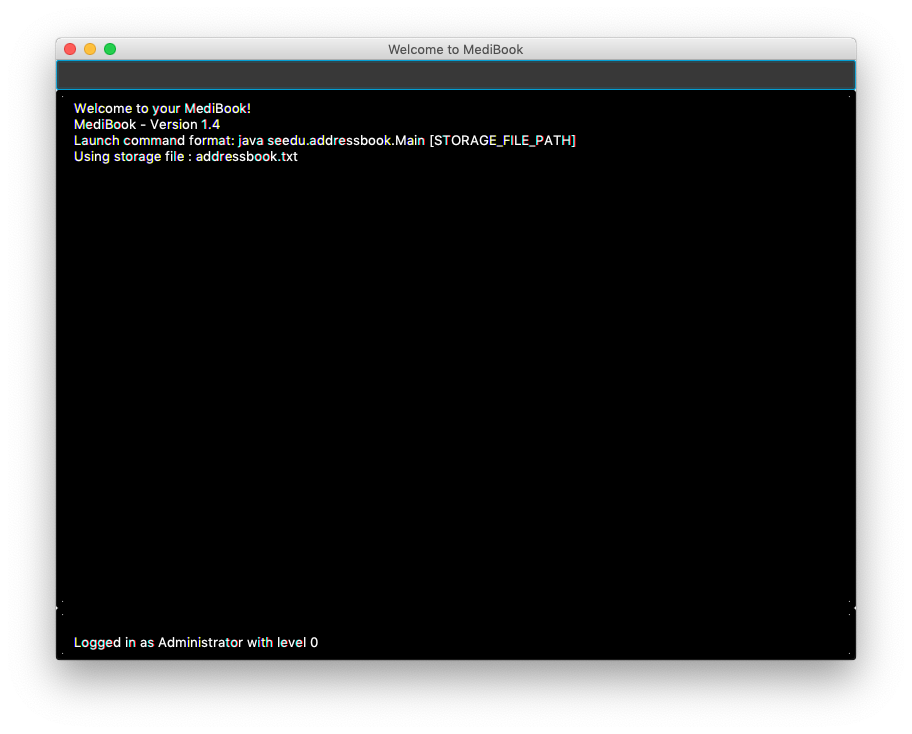

1 Introduction
MediBook v1.4 optimises and streamlines healthcare administration for a better heathcare experience for all. MediBook helps healthcare professionals to store and organise patients’ details as well as arrange their schedule based on their patients’ appointments. All of this is secured by the login which also limits the user access level accordingly.
2 About
This user guide provides an overview for healthcare professionals on the usage of MediBook.
3 Starting MediBook
-
Download the latest version of MediBook from our team’s GitHub repository here.
-
Double click the jar file to start it.
-
The login GUI should appear in a few seconds

-
Enter "Username" in the username field and "Password" in the password field according to the prompts
-
If incorrect username and password is entered, both fields will be cleared and you can try logging in again. Program will exit upon login failure, i.e. 3 incorrect username/password tries
-
Upon successful login, main GUI
Welcome to your MediBook!will appear. -
Current Username and Access level will be displayed at bottom of main GUI

|
Two .txt files (addressbook.txt and loginstorage.txt) with preloaded data will be created in the same directory as the .jar file. If you wish to start Medibook from scratch, delete the contents of BOTH these files. |
4 Features of MediBook
4.2 Listing all persons : list
Shows a list of all persons in MediBook.
Format: list
4.3 Sorting the list : sortname
Sorts the list of entries in MediBook according to alphabetical order.
After the list is sorted, future commands (e.g. delete ) will use the index of the sorted list.
Format: sortname
4.3.1 Sorting the list according to title : sorttitle
Sorts the entries in MediBook according to title.
Entries within the titles are sorted according to alphabetical order.
After the list is sorted, future commands (e.g. delete ) will use the index of the sorted list.
Format: sorttitle
4.4 Clearing all entries : clear
Clears all entries in MediBook.
Format: clear
4.5 Finding all persons containing any keyword in their name: find
Finds persons whose names contain any of the given keywords.
Format: find KEYWORD [MORE_KEYWORDS]
|
The search is case insensitive and the order of the keywords does not matter. Only the name searched,
and persons matching at least one keyword will be returned(i.e. |
Examples:
-
find John
ReturnsJohn Doeandjohn. -
find Betsy Tim John
Returns Any person having namesBetsy,Tim, orJohn.
4.6 Adding a person: add
Adds a person to MediBook.
Format: add NAME n/NRIC [p]p/PHONE_NUMBER [p]e/EMAIL [p]a/ADDRESS s/TITLE [d/DD-MM-YYYY-HH:MM]… [t/TAG]…
|
TITLE is used to differentiate a doctor and a patient. Putting DD-MM-YYYY-HH:MM is used to record appointment dates and their starting time. TAG is used to tag medical conditions and other important information. |
Examples:
-
add John Doe n/S1239875U p/98765432 e/johnd@gmail.com a/311, Clementi Ave 2, #02-25 s/Patient d/01-01-2019-13:00 d/09-11-2018-14:00 t/hasDiabetesType2 t/onInsulinTherapy -
add Betsy Crowe n/S7654321T pp/1234567 e/betsycrowe@gmail.com pa/Newgate Prison s/Doctor
4.7 Deleting a person : delete
Deletes the specified person from MediBook.
Format: delete INDEX
Examples:
-
list
delete 2
Deletes the 2nd person in MediBook. -
find Betsy
delete 1
Deletes the 1st person in the results of thefindcommand.
4.8 View non-private details of a person : view
Displays the non-private details of the specified person.
Format: view INDEX
Examples:
-
list
view 2
Views the 2nd person in MediBook. -
find Betsy
view 1
Views the 1st person in the results of thefindcommand.
4.9 View all details of a person : viewall
Displays all details (including private details) of the specified person.
Format: viewall INDEX
Examples:
-
list
viewall 2
Views all details of the 2nd person in MediBook. -
find Betsy
viewall 1
Views all details of the 1st person in the results of thefindcommand.
4.10 Selecting a person to edit appointment: edit-appointment
Selects the person to edit appointment.
Format: 'edit-appointment INDEX'
Examples:
* list
edit-appointment 2
Access to the 2nd person in MediBook.
-
find Betsy
edit-appointment 1
Access to the 1st person in the results of thefindcommand.
4.10.1 Viewing help : help
Shows the help screen for the edit-appointment session.
Format: help
|
Help is also shown if you enter an incorrect command e.g. |
4.10.2 Listing the appointment of the selected person: list
Shows a list of all appointment of the selected person in MediBook.
Format: list
4.10.3 Adding appointment to the selected person: add
Adds appointments to the selected person in MediBook.
Format: add DD-MM-YYYY-HH:MM…
Examples:
-
add 01-01-2019-13:00 -
add 01-01-2019-13:00 02-01-2019-14:00 03-01-2019-15:00
4.10.4 Deleting appointment of the selected person: delete
Deletes appointments from the selected person in MediBook.
Format: delete DD-MM-YYY-HH:MM…
Examples:
-
delete 01-01-2019-13:00 -
delete 01-01-2019-13:00 02-01-2019-14:00 03-01-2019-15:00
4.10.5 Exiting the edit-appointment session: done
Exits the edit-appointment session.
Format: done
4.11 Associate a patient and a doctor: link
Create an association between person specified at INDEX1 and the person specified at INDEX2
Format: link INDEX1 INDEX2
|
Similar to viewall, view and delete, it requires list or find command to be called at least once in the session for an index reference to edit-appointment. |
Examples:
-
list
link 1 2
Associate the 1st person with the 2nd person in MediBook.
4.12 Remove association : unlink
Removes association between person specified at INDEX1 and the person specified at INDEX2
Format: link INDEX1 INDEX2
|
Similar to viewall, view and delete, it requires list or find command to be called at least once in the session for an index reference to edit-appointment. |
Examples:
-
list
unlink 1 2
Removes association between the 1st person with the 2nd person in MediBook.
4.13 Listing all persons associated: associatelist
Shows a list of persons associated with the specified person
Format: associatelist INDEX
|
Similar to viewall, view and delete, it requires list or find command to be called at least once in the session for an index reference to edit-appointment. |
Examples:
-
list
associatelist 2
Views the persons associated with the 2nd person in MediBook.
4.14 Change Password: changepassword
Changes the password of the current logged-in-user. Format: changepassword pw/CURRENTPASSWORD npw/NEWPASSWORD cpw/CONFIRMNEWPASSWORD
|
CURRENTPASSWORD must be the current password of the logged-in-user NEWPASSWORD and CONFIRMNEWPASSWORD must be exactly the same. |
Examples:
-
changepassword pw/0ldPassword! npw/N3wPassword! cpw/N3wPassword!
4.15 Undo: undo
Undo reverts the last command made.
Format: undo
|
Calling undo when no changes are made to MediBook’s data will result in an error message saying "No commands to undo" instead. |
4.16 Redo: redo
Redo reverts the last undo command made when applicable.
Format: redo
|
Once a change is made after an undo, a redo to previous changes that are undone is no longer possible. In this case an error message saying "No commands to redo" will be shown. |
Examples:
-
list
delete 2
Deletes the 2nd person in MediBook.
undo
Undo the deletion of the deleted person.
redo
Redo the deletion of 2nd person in MediBook. -
find Betsy
delete 1
Deletes the 1st person in the results of thefindcommand.
undo
Undo the deletion of the deleted person.
redo
Redo the deletion of 1st person in the results of thefindcommand.
|
Calling redo when no undo was done will result in an error message saying "No commands to redo" instead. |
4.17 Listing all executed commands : history
Shows a list of all executed commands in the current session.
Format: history
4.18 Exiting the program : exit
Exits the program.
Format: exit
4.19 Access levels
Certain data fields of a person will require a certain access level to view the information. If the User does not have the required access level, the field will be displayed as "*** HIDDEN ***" instead. Address field is such a data type. A smaller number indicate a higher access level with level 0 being the highest level.
Examples:
-
list
viewall 1
Views all details of the 1st person in MediBook. DISPLAYED:
Viewing person: John Doe NRIC: S1233210Y Phone: 81654610 Email: 10@gmail Address: *** HIDDEN *** Title: Doctor Schedule: Tags:
4.20 Saving the data
MediBook data is saved in the hard disk automatically after any command that changes the data. As such, there is no need to save the data manually. Data is saved in a file called addressbook.txt in the project root folder.
However, the history of commands made are only available within the browsing session and would no longer be available after typing the exit command or the program is closed. Undo and Redo commands are also only applicable within the browsing session.
5 A Compact Summary
-
help: Shows the help screen -
list: Shows a list of all persons in MediBook. -
sortname: Sorts according to name and lists all. -
sorttitle: Sorts according to title and lists all. -
clear: Clear all entries in MediBook -
find: Finds persons whose names contain any of the given keywords -
add: Adds a person into MediBook -
delete: Delete a person in MediBook -
view: View the information of a person in MediBook -
viewall: View all information of a person in MediBook -
edit-appointment: Selects a person to edit his/her appointment dates-
help: Shows the help screen for the edit-appointment session -
list: Shows the list of all appointments for the selected persons -
add: Add appointment dates -
delete: Delete the appointment dates -
done: Exit the edit-appointment session
-
-
link: Create an associate between a doctor and a patient -
unlink: Remove association between the two targets -
associatelist: List all persons associated -
changepassword: Changes password for current logged-in-user -
undo: Undo a change made previously -
redo: Redo a change that was undone -
history: Shows a list of all executed commands -
exit: Exits the program
6 Troubleshooting/FAQ
| Error Message | Probable Reason | Remedy |
|---|---|---|
At Login: Maximum login attempts attempted. Please try again later |
You have attempted to login unsuccessfully in successive tries |
Please wait for 5 mins before trying again. If urgent access is needed, please contact the system administrator for your hospital |
7 Known Bugs
-
undocommand might show the error message "An error has occurred with the undo command"-
if you encounter this, please let us know the steps that leads up to that point so we can replicate it
-